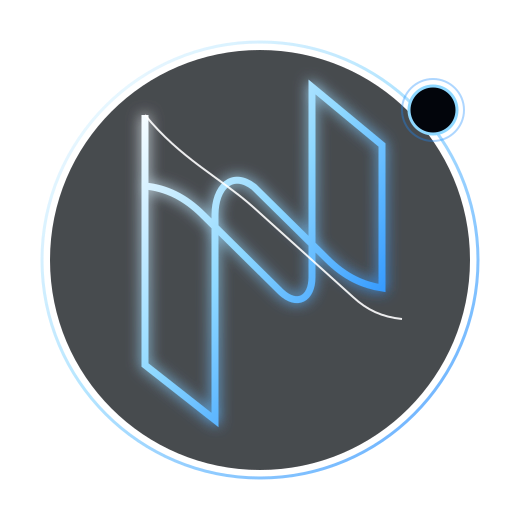

Think
Understand intent, reason, research, plan, and challenge assumptions.

NEYTRA OSNeytra is being designed as an intelligent computing layer that understands intent, adapts to software and devices, and acts across your digital environment.
Neytra aims to make intelligence a first-class system capability — connecting the user, applications, hardware, devices, developer tools and environment.
Understand intent, reason, research, plan, and challenge assumptions.
Discover applications, devices and interfaces. Learn capabilities instead of brittle screen coordinates.
Execute through APIs, IPC, accessibility and vision — with permissions and verification.
NIP is the intelligence platform being designed as the reusable brain behind adaptive computing. It is intentionally separated from the OS so the intelligence layer can evolve independently.
Dynamic model selection based on task, hardware, latency and privacy.
Local inference and tools whenever sufficient. Network is a capability, not a dependency.
Prefer native APIs and structured interfaces; use vision as fallback.
Discover connected devices and capabilities while preserving permissions.
Inspect, build, test, debug, profile and verify software.
Sandboxing, policy, audit trails and approval for consequential operations.
LOCAL CHECK → EXECUTE
NETWORK REQUIRED → EXPLAIN → ASK PERMISSION
Investigate problems, inspect source and system state, form hypotheses, implement controlled changes, run tests and benchmarks, and present evidence.
Explore the project ↗$ neytra investigate build [01] Inspecting project... [02] Analyzing architecture... [03] Running tests... [04] Forming hypotheses... [05] Verifying fix... ✓ Root cause identified ✓ Reproduction test PASS ✓ No production files modified $ _
AI service · local models · routing · IPC
Filesystem · processes · permissions · audit
Planner · executor · observer · critic · verifier
Wake word · local STT · local TTS
App discovery · device discovery · capability graph
Code analysis · builds · testing · debugging · Git
Research · static analysis · binary analysis · sandboxing
Specialized agents · parallel execution · long-running tasks
Founder & creator of NEYTRA OS — building toward an AI-native computing layer where intelligence is part of the system itself.
NEYTRA OS — Think. Adapt. Act.